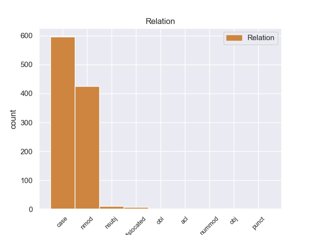
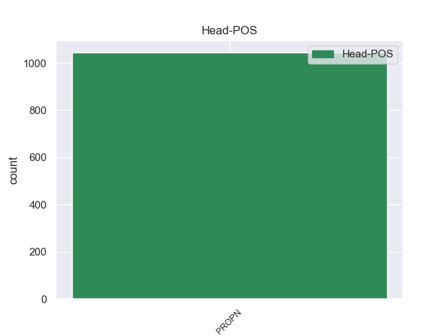
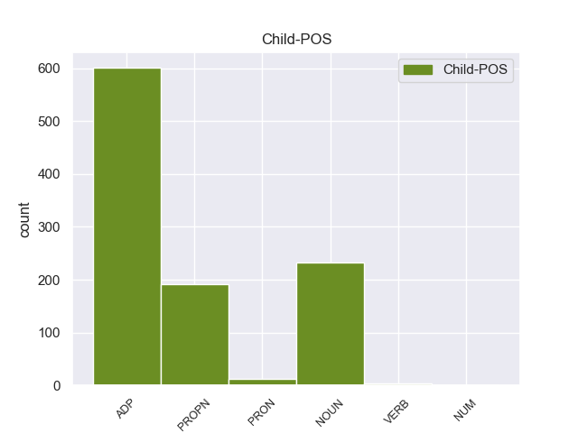

Distribution of features within this leaf



Agreement Rules sorted by frequency.
- When the dependent token is the case marking(case) of the head token, and the head token is PROPN
1 पत्रिका _ _ _ _ 0 _ _ _
2 के _ _ _ _ 0 _ _ _
3 अनुसार _ _ _ _ 0 _ _ _
4 खान खान PROPN NNP Case=Acc|Gender=Masc|Number=Sing|Person=3 0 _ _ _
5 की का ADP PSP AdpType=Post|Case=Acc|Gender=Fem|Number=Plur 4 case _ ChunkId=NP2|ChunkType=child|Translit=kī
6 इन _ _ _ _ 0 _ _ _
7 यात्राओं _ _ _ _ 0 _ _ _
8 का _ _ _ _ 0 _ _ _
9 उद्देश्य _ _ _ _ 0 _ _ _
10 अभी _ _ _ _ 0 _ _ _
11 तक _ _ _ _ 0 _ _ _
12 स्पष्ट _ _ _ _ 0 _ _ _
13 नहीं _ _ _ _ 0 _ _ _
14 है _ _ _ _ 0 _ _ _
15 , _ _ _ _ 0 _ _ _
16 लेकिन _ _ _ _ 0 _ _ _
17 खुफिया _ _ _ _ 0 _ _ _
18 अधिकारियों _ _ _ _ 0 _ _ _
19 का _ _ _ _ 0 _ _ _
20 मानना _ _ _ _ 0 _ _ _
21 है _ _ _ _ 0 _ _ _
22 कि _ _ _ _ 0 _ _ _
23 सऊदी _ _ _ _ 0 _ _ _
24 अरब _ _ _ _ 0 _ _ _
25 और _ _ _ _ 0 _ _ _
26 मिस्र _ _ _ _ 0 _ _ _
27 परमाणु _ _ _ _ 0 _ _ _
28 तक़नीक _ _ _ _ 0 _ _ _
29 की _ _ _ _ 0 _ _ _
30 तलाश _ _ _ _ 0 _ _ _
31 में _ _ _ _ 0 _ _ _
32 हैं _ _ _ _ 0 _ _ _
33 और _ _ _ _ 0 _ _ _
34 कई _ _ _ _ 0 _ _ _
35 अफ्रीकी _ _ _ _ 0 _ _ _
36 देश _ _ _ _ 0 _ _ _
37 कच्चे _ _ _ _ 0 _ _ _
38 यूरेनियम _ _ _ _ 0 _ _ _
39 संपन्न _ _ _ _ 0 _ _ _
40 हैं _ _ _ _ 0 _ _ _
41 । _ _ _ _ 0 _ _ _
1 इनोकी _ _ _ _ 0 _ _ _
2 ने _ _ _ _ 0 _ _ _
3 कहा _ _ _ _ 0 _ _ _
4 कि _ _ _ _ 0 _ _ _
5 जापान _ _ _ _ 0 _ _ _
6 के _ _ _ _ 0 _ _ _
7 प्रधानमंत्री प्रधानमंत्री PROPN NNP Case=Nom|Gender=Masc|Number=Sing|Person=3 9 nmod _ ChunkId=NP3|ChunkType=head|Tam=0|Translit=pradhānamaṁtrī|Vib=0
8 जुनीचीरो _ _ _ _ 0 _ _ _
9 कोइजुमी कोइजुमी PROPN NNP Case=Nom|Gender=Masc|Number=Sing|Person=3 0 _ _ _
10 भी _ _ _ _ 0 _ _ _
11 इस _ _ _ _ 0 _ _ _
12 वर्ष _ _ _ _ 0 _ _ _
13 भारत _ _ _ _ 0 _ _ _
14 की _ _ _ _ 0 _ _ _
15 यात्रा _ _ _ _ 0 _ _ _
16 पर _ _ _ _ 0 _ _ _
17 आएंगे _ _ _ _ 0 _ _ _
18 । _ _ _ _ 0 _ _ _
1 भारतीय _ _ _ _ 0 _ _ _
2 भूगर्भ _ _ _ _ 0 _ _ _
3 सर्वेक्षण सर्वेक्षण PROPN NNP Case=Acc|Gender=Masc|Number=Sing|Person=3 0 _ _ _
4 ( _ _ _ _ 0 _ _ _
5 जीएसआई _ _ _ _ 0 _ _ _
6 ) _ _ _ _ 0 _ _ _
7 के का ADP PSP AdpType=Post|Case=Acc|Gender=Masc|Number=Sing 3 dislocated _ ChunkId=FRAGP|ChunkType=head|Translit=ke
8 निदेशक _ _ _ _ 0 _ _ _
9 सुजीत _ _ _ _ 0 _ _ _
10 दासगुप्ता _ _ _ _ 0 _ _ _
11 ने _ _ _ _ 0 _ _ _
12 बुधवार _ _ _ _ 0 _ _ _
13 को _ _ _ _ 0 _ _ _
14 दावा _ _ _ _ 0 _ _ _
15 किया _ _ _ _ 0 _ _ _
16 कि _ _ _ _ 0 _ _ _
17 अब _ _ _ _ 0 _ _ _
18 से _ _ _ _ 0 _ _ _
19 ७५ _ _ _ _ 0 _ _ _
20 साल _ _ _ _ 0 _ _ _
21 बाद _ _ _ _ 0 _ _ _
22 २०८० _ _ _ _ 0 _ _ _
23 में _ _ _ _ 0 _ _ _
24 देश _ _ _ _ 0 _ _ _
25 के _ _ _ _ 0 _ _ _
26 पूर्वी _ _ _ _ 0 _ _ _
27 तटों _ _ _ _ 0 _ _ _
28 पर _ _ _ _ 0 _ _ _
29 सुनामी _ _ _ _ 0 _ _ _
30 लहरों _ _ _ _ 0 _ _ _
31 की _ _ _ _ 0 _ _ _
32 वापसी _ _ _ _ 0 _ _ _
33 होगी _ _ _ _ 0 _ _ _
34 । _ _ _ _ 0 _ _ _
1 राजग राजग PROPN NNP Case=Acc|Gender=Masc|Number=Sing|Person=3 6 nsubj _ ChunkId=NP|ChunkType=head|Tam=0|Translit=rājaga|Vib=0_का
2 का _ _ _ _ 0 _ _ _
3 इशारा _ _ _ _ 0 _ _ _
4 लोक _ _ _ _ 0 _ _ _
5 जनतांत्रिक _ _ _ _ 0 _ _ _
6 पार्टी पार्टी PROPN NNP Case=Acc|Gender=Fem|Number=Sing|Person=3 0 _ _ _
7 की _ _ _ _ 0 _ _ _
8 ओर _ _ _ _ 0 _ _ _
9 है _ _ _ _ 0 _ _ _
10 । _ _ _ _ 0 _ _ _
1 इन _ _ _ _ 0 _ _ _
2 झटकों _ _ _ _ 0 _ _ _
3 की _ _ _ _ 0 _ _ _
4 तीव्रता _ _ _ _ 0 _ _ _
5 ५ ५ NUM QC Case=Acc|NumType=Card 9 nummod _ ChunkId=NP3|ChunkType=head|Translit=5|Vib=0_से
6 से _ _ _ _ 0 _ _ _
7 ६.२ _ _ _ _ 0 _ _ _
8 रिक्टर _ _ _ _ 0 _ _ _
9 स्केल स्केल PROPN NNP Case=Acc|Gender=Masc|Number=Sing|Person=3 0 _ _ _
10 के _ _ _ _ 0 _ _ _
11 बीच _ _ _ _ 0 _ _ _
12 थी _ _ _ _ 0 _ _ _
13 । _ _ _ _ 0 _ _ _
1 एलायंस _ _ _ _ 0 _ _ _
2 एयर _ _ _ _ 0 _ _ _
3 बोइग _ _ _ _ 0 _ _ _
4 - _ _ _ _ 0 _ _ _
5 ७३७ _ _ _ _ 0 _ _ _
6 विमान विमान NOUN NN Case=Acc|Gender=Masc|Number=Sing|Person=3 16 obj _ ChunkId=NP|ChunkType=head|Tam=0|Translit=vimāna|Vib=0_को
7 को _ _ _ _ 0 _ _ _
8 तकनीकी _ _ _ _ 0 _ _ _
9 खराबी _ _ _ _ 0 _ _ _
10 के _ _ _ _ 0 _ _ _
11 कारण _ _ _ _ 0 _ _ _
12 छत्रपति _ _ _ _ 0 _ _ _
13 शिवाजी _ _ _ _ 0 _ _ _
14 अंतर्राष्ट्रीय _ _ _ _ 0 _ _ _
15 हवाई _ _ _ _ 0 _ _ _
16 अड्डे अड्डा PROPN NNP Case=Acc|Gender=Masc|Number=Sing|Person=3 0 _ _ _
17 पर _ _ _ _ 0 _ _ _
18 इमरजेंसी _ _ _ _ 0 _ _ _
19 लैंडिंग _ _ _ _ 0 _ _ _
20 के _ _ _ _ 0 _ _ _
21 तहत _ _ _ _ 0 _ _ _
22 सुरक्षित _ _ _ _ 0 _ _ _
23 उतारा _ _ _ _ 0 _ _ _
24 गया _ _ _ _ 0 _ _ _
25 । _ _ _ _ 0 _ _ _
Disagree Examples:
1 हाथी _ _ _ _ 0 _ _ _
2 महल _ _ _ _ 0 _ _ _
3 , _ _ _ _ 0 _ _ _
4 दरिया _ _ _ _ 0 _ _ _
5 खान _ _ _ _ 0 _ _ _
6 की _ _ _ _ 0 _ _ _
7 मजार _ _ _ _ 0 _ _ _
8 , _ _ _ _ 0 _ _ _
9 दाई _ _ _ _ 0 _ _ _
10 का _ _ _ _ 0 _ _ _
11 महल _ _ _ _ 0 _ _ _
12 , _ _ _ _ 0 _ _ _
13 दाई _ _ _ _ 0 _ _ _
14 की _ _ _ _ 0 _ _ _
15 छोटी _ _ _ _ 0 _ _ _
16 बहन बहन PROPN NNP Case=Acc|Gender=Fem|Number=Sing|Person=3 18 nmod _ ChunkId=NP4|ChunkType=child|Tam=0|Translit=bahana|Vib=0
17 का _ _ _ _ 0 _ _ _
18 महल महल PROPN NNP Case=Nom|Gender=Masc|Number=Sing|Person=3 0 _ _ _
19 , _ _ _ _ 0 _ _ _
20 मलिक _ _ _ _ 0 _ _ _
21 मघत _ _ _ _ 0 _ _ _
22 की _ _ _ _ 0 _ _ _
23 मस्जिद _ _ _ _ 0 _ _ _
24 और _ _ _ _ 0 _ _ _
25 जाली _ _ _ _ 0 _ _ _
26 महल _ _ _ _ 0 _ _ _
27 भी _ _ _ _ 0 _ _ _
28 दर्शनीय _ _ _ _ 0 _ _ _
29 हैं _ _ _ _ 0 _ _ _
30 । _ _ _ _ 0 _ _ _
1 ओरलैंडों ओरलैंडों PROPN NNP Case=Acc|Gender=Masc|Number=Sing|Person=3 0 _ _ _
2 की का ADP PSP AdpType=Post|Case=Nom|Gender=Fem|Number=Sing 1 case _ ChunkId=NP|ChunkType=child|Translit=kī
3 आबादी _ _ _ _ 0 _ _ _
4 मात्र _ _ _ _ 0 _ _ _
5 दो _ _ _ _ 0 _ _ _
6 लाख _ _ _ _ 0 _ _ _
7 है _ _ _ _ 0 _ _ _
8 , _ _ _ _ 0 _ _ _
9 लेकिन _ _ _ _ 0 _ _ _
10 यहाँ _ _ _ _ 0 _ _ _
11 हर _ _ _ _ 0 _ _ _
12 साल _ _ _ _ 0 _ _ _
13 लगभग _ _ _ _ 0 _ _ _
14 पाँच _ _ _ _ 0 _ _ _
15 करोड़ _ _ _ _ 0 _ _ _
16 पर्यटक _ _ _ _ 0 _ _ _
17 आते _ _ _ _ 0 _ _ _
18 हैं _ _ _ _ 0 _ _ _
19 । _ _ _ _ 0 _ _ _
1 इस _ _ _ _ 0 _ _ _
2 शहर _ _ _ _ 0 _ _ _
3 को _ _ _ _ 0 _ _ _
4 इब्राहिम _ _ _ _ 0 _ _ _
5 लोदी _ _ _ _ 0 _ _ _
6 ने _ _ _ _ 0 _ _ _
7 सन् सन् NOUN NN Case=Nom|Gender=Masc|Number=Sing|Person=3 8 nmod _ ChunkId=NP3|ChunkType=child|Tam=0|Translit=san|Vib=0
8 1504 1504 PROPN NNP Case=Acc|Number=Sing|Person=3 0 _ _ _
9 में _ _ _ _ 0 _ _ _
10 बसाया _ _ _ _ 0 _ _ _
11 . _ _ _ _ 0 _ _ _
1 ऐतिहासिक _ _ _ _ 0 _ _ _
2 महत्व _ _ _ _ 0 _ _ _
3 की _ _ _ _ 0 _ _ _
4 इन _ _ _ _ 0 _ _ _
5 गुफाओं _ _ _ _ 0 _ _ _
6 वाले _ _ _ _ 0 _ _ _
7 पर्वत _ _ _ _ 0 _ _ _
8 के _ _ _ _ 0 _ _ _
9 शिखर _ _ _ _ 0 _ _ _
10 पर _ _ _ _ 0 _ _ _
11 छठी _ _ _ _ 0 _ _ _
12 शताब्दी शताब्दी PROPN NNP Case=Acc|Gender=Fem|Number=Sing|Person=3 0 _ _ _
13 का का ADP PSP AdpType=Post|Case=Nom|Gender=Masc|Number=Sing 12 case _ ChunkId=NP5|ChunkType=child|Translit=kā
14 गुप्तकालीन _ _ _ _ 0 _ _ _
15 मंदिर _ _ _ _ 0 _ _ _
16 है _ _ _ _ 0 _ _ _
17 । _ _ _ _ 0 _ _ _
1 लेकिन _ _ _ _ 0 _ _ _
2 फिर _ _ _ _ 0 _ _ _
3 भी _ _ _ _ 0 _ _ _
4 अक्टूबर _ _ _ _ 0 _ _ _
5 से _ _ _ _ 0 _ _ _
6 मार्च मार्च PROPN NNP Case=Acc|Gender=Masc|Number=Sing|Person=3 0 _ _ _
7 तक _ _ _ _ 0 _ _ _
8 का का ADP PSP AdpType=Post|Case=Nom|Gender=Masc|Number=Sing 6 case _ ChunkId=NP2|ChunkType=child|Translit=kā
9 समय _ _ _ _ 0 _ _ _
10 साँची _ _ _ _ 0 _ _ _
11 जाने _ _ _ _ 0 _ _ _
12 के _ _ _ _ 0 _ _ _
13 लिए _ _ _ _ 0 _ _ _
14 बेहतर _ _ _ _ 0 _ _ _
15 होता _ _ _ _ 0 _ _ _
16 है _ _ _ _ 0 _ _ _
17 । _ _ _ _ 0 _ _ _